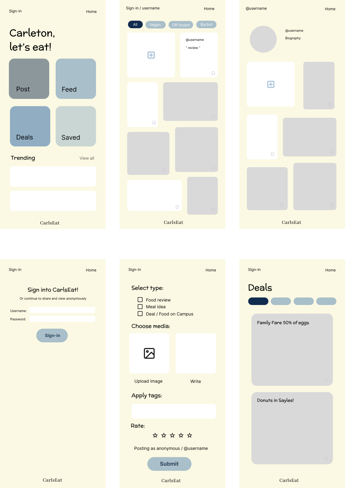

Carls Eat
Team Members: Chloe Simanek, Ekow Anderson, Scott Gevurtz, Zubeyda Shute
Problem:Many Carleton students are unhappy with their dining hall experience, citing issues such as food poisoning, frequently mislabeled dietary information, and the high cost of the meal plan. Our goal is to prototype a platform where students can share and rate meals, suggest dining hall or off-campus meal ideas, and post about food-related deals or events near campus. By using the app, students can plan ahead and improve their overall dining experience.
Solution:
CarlsEat App
Low-fidelity prototype:

Adressing User Needs
Posting Options
- Since students have busy schedules, they may not always have time to take a photo of their meal. To address this, the app gives them the option to post images and/or text.
The app also allows users to tag their posts with relevant details, such as the dining hall the meal is from or any dietary restrictions it meets, catering to diverse preferences and needs.
Depending on their experience, users are able to leave a positive or negative review using a five-star rating scale.
Finally, users are able to post different types of content (reviews, ideas, or deals/events).
Use the App Signed-In or Anonymously
- Some interviewees expressed concerns about sharing their identity on the platform. To address this, the prototype allows students to post and view content anonymously if they choose.
Save Meal Ideas
- Students want an easy way to find and revisit meal ideas. The app includes a feature that lets users save posts, which are then collected in a section accessible on their profile and home page.
To encourage engagement, popular posts with a high number of saves will be featured in a "Trending" section on the home page.
Custom Feed
- A collage-style display with filtering options allows users to either browse casually or quickly find the information they need.